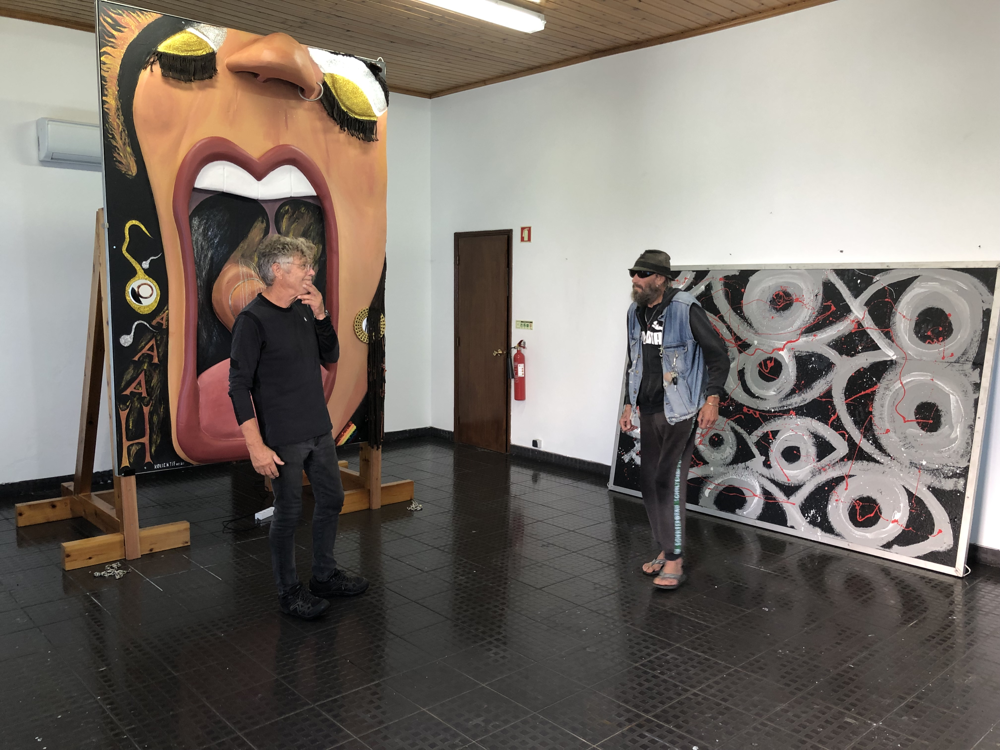
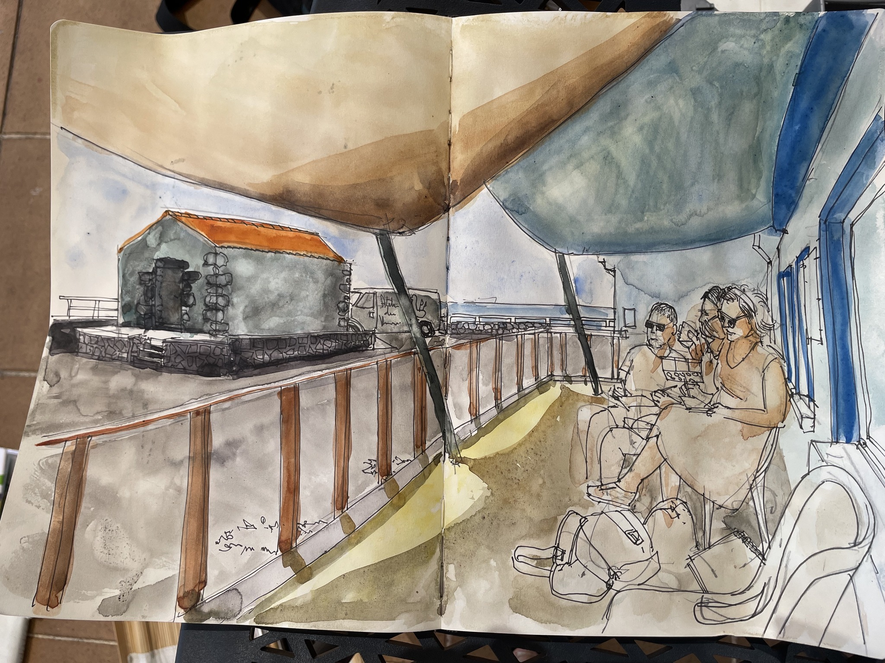
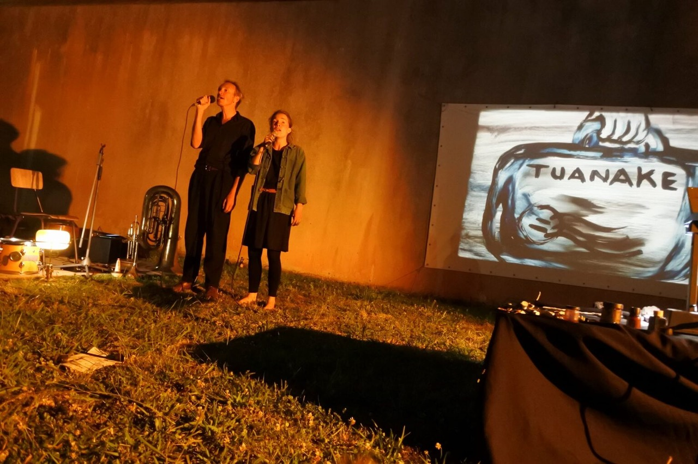
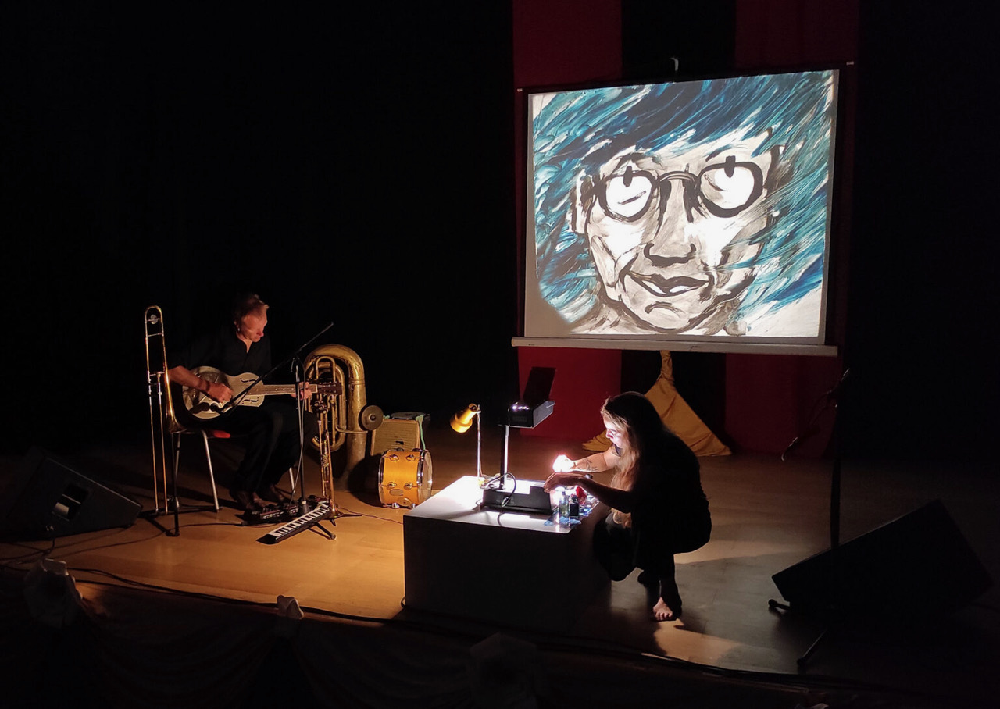

Welcome to Azorean Art Center, this website is still under construction and we strive to open the full site the 8 of June '24.
Fringe Festival 2024 in Atelier de Kaasfabriek
June the 8th at 15h. Atelier de Kaasfabriek
We open the Fringe Festival with a selection of new initiatives.
There will be food, drinks and music (bring your own instrument(s)).
-
Some highlights:
-
June 8th - August
Exposition Kollektif (kollektif.pt)
Kollektif is a collaborative art project founded by Ewout Adriaans and Ger van der Zee. Their aim is to create and stimulate thought-provoking artworks that encourage discussion and creativity for the sake of enjoyment, not fame. Under the slogan “You don't need to be an artist to have fun with art” they present a triptych consisting of three stirring artworks themed 'Slavery', 'All Eyez on Me', and 'Orgasm'.

Expositions will stay during the whole season from June till August. -
June 15, 14-17 h.
Meeting Urban Sketchers in Urzelina
We get togher in Urzelina to sketch the imperios. After the session we have drinks in Art Restaurant Manezinho
 -
June 28, 21.30 h.
Restaurant Manezinho: Tuanake (honkytonksail.com)
Tuanake is a show of 45 minutes, created in 2021 by Honky tonk sail, mixing live painting and original music, with Soizic Séon & Bots (France).
Tuanake, is a ghost island. It’s a piece of land founded in the middle of the ocean, and never again seen. A lost letter drives two characters to exchange about islands, freedom, quest, exploration, conquest, colonisation and exil. The journey has many faces. Names of places and names of people are talking to the one who know how to listen. The stories are not always simple.
 